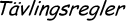
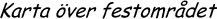
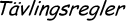
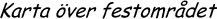

DömD arrangeras av D-Group, och frågor av alla möjliga slag kan skickas till: dgroup@ctrl-c.liu.se
 


I väntan på bättre tider (10-12 April), så kan ni alltid kolla in följande:
DömD arrangeras av
D-Group,
och frågor av alla möjliga slag kan skickas till:
dgroup@ctrl-c.liu.se

